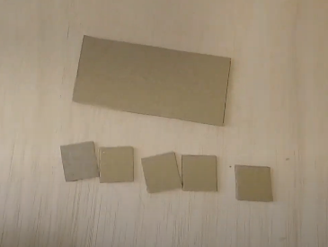
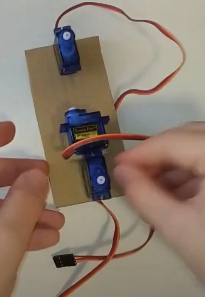
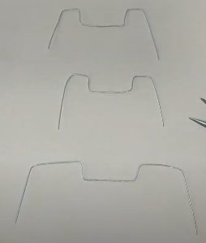
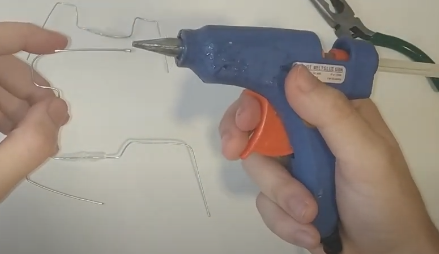
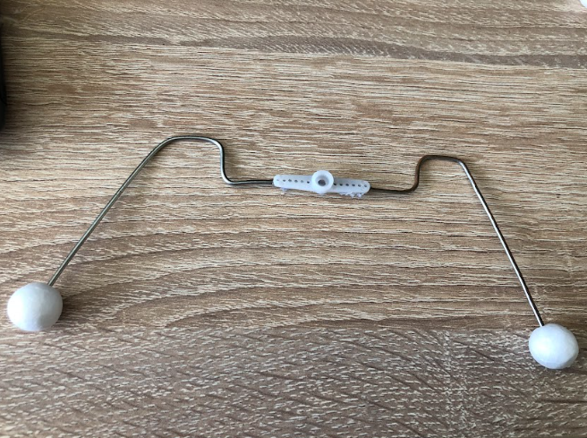
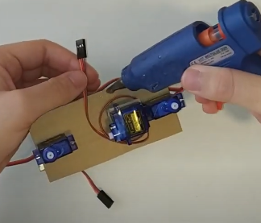

Pasos del montaje
Primer paso
Primero de todo tendremos que comprar todos los materiales como por ejemplo en amazon.

Segundo paso
Cortamos 5 trozos con un cuter en la medida 2,5cm 2,5cm que sera para la pata del medio que necesita estar mas abajo el servomotor y luego un de 11.5cm 5,5cm que sera para el cuerpo del robotinsecto.
Tercer paso
Este paso tendremos que pegar con silicona caliente (o otro tipo de pegamento) los tres servomotores.
Cuarto paso
Ahora tendremos que cojer el rollo de alambre y cortar dos a partes iguales y el que ira en medio tendremos que cortar un poco mas que los otros. Con la ayuda de un alicate le daremos la forma que nos indica en la imagen.
Quinto paso
Despues de cortar y hacer las patas, tendremos unas cuantas opciones para darle estabilidad al cuerpo del robot, se puede hacer con la pistola de silicona tiras un poco y lo envuelves para hacer una pelotilla de silicona. Otra opcion que hemos cojido nosotros a sido cojer unas bolas de poliestireno porque la silicona no nos iba muy bien.
 Sexto paso
Ahora con la ayuda de la silicona y nuestra manos enrrollaremos los cables y en algunos puntos pondremos silicona para dejarlo bien enrrollado y que no se mezcle con las patas.
Séptimo paso
Ahora despues de pegar los cables del servo, conectaremos los siguientes cables a los servomotores:
-El pin del servomotor delantero al pin número 6
-El pin del servomotor del medio al pin número 5
-El pin del servomotor de atras al pin número 4
Octavo paso
-Despues de conectar los cables, pondremos las patas a los servomotores, cargaremos el pin al arduino y conectando el clip a la bateria deberia hacer su funcion que es caminar.